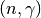
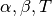

Theory and Methodology¶
- 1. Introduction
- 2. Geometry
- 3. Cross Section Representation
- 4. Random Number Generation
- 5. Physics
- 5.1. Sampling Distance to Next Collision
- 5.2.  and Other Disappearance Reactions
- 5.3. Elastic Scattering
- 5.4. Inelastic Scattering
- 5.5.
 Reactions
Reactions - 5.6. Fission
- 5.7. Secondary Angles and Energy Distributions
- 5.8. Transforming a Particle’s Coordinates
- 5.9. Effect of Thermal Motion on Cross Sections
- 5.10. S() Tables
- 5.11. Unresolved Resonance Region Probability Tables
- 5.12. Variance Reduction Techniques
- 5.13. References
- 6. Tallies
- 7. Eigenvalue Calculations
- 8. Parallelization